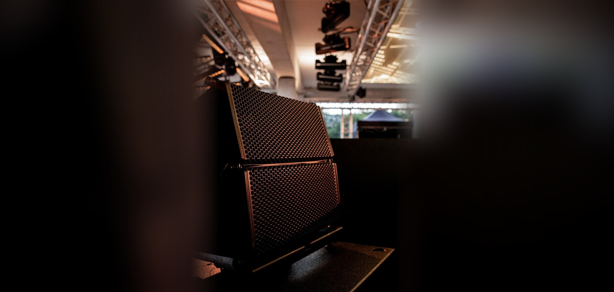

Eigenaren en exploitanten
van eventlocaties

Vandaag een modeshow, morgen een seminar, overmorgen een bedrijfsfeest met dj. Elke klant vraagt om een andere opzet.
Wij vertalen de vraag van je klant naar een passende opzet in licht, geluid en muziek. In overleg met jou loopt het contact met de eindklant via jou of via ons, en we houden je steeds op de hoogte. Als je wilt, koppelen we daar een digitale planner aan.
Je klanten
De vragen die op je afkomen
Je moet van alle markten thuis zijn. HEAR en ons netwerk kunnen die vragen voor je oppakken.
- Een seminar met sprekers en een presentatie
- Een modeshow of collectiepresentatie
- Een bedrijfsfeest met dj
- Een productlancering
- Een diner met muziek op de achtergrond
- Een clubnacht of pop-up
- Een bruiloft of privéfeest
Wat we leveren
Dit kunnen we je bieden bij events
Per event
- Een opzet per klantvraagLicht, geluid en muziek, afgestemd op het type event
- Contact met de eindklantVia jou of via ons, in overleg, met een digitale planner als je wilt
- Dj's en artiestenVoor een feest of borrel op jouw locatie
Meer over geluid en atmosfeerlicht
Netwerk
- Opschalen voor grotere eventsMet professionals uit ons netwerk
- Andere vakmensenWe brengen je in contact met wie je nodig hebt
Speciale wensen? Laat het weten.

Hoe we samenwerken
Eén aanspreekpunt
We zijn je vaste aanspreekpunt voor licht, geluid en muziek. Waar nodig werken we met professionals uit ons netwerk, om op te schalen of om je in contact te brengen met wie je nodig hebt.
Werkwijze
Zo werken we
Kennismaking op de locatie
De ruimte, je klanten en de soorten events die je draait.
- 1Kennismaking op de locatie
De ruimte, je klanten en de soorten events die je draait. - 2De ruimte in kaart
Akoestiek, stroom, ophangpunten en opbouwtijden. - 3Afspraken
Hoe we samenwerken: per event, met vaste opzetten of met een installatie. - 4Per klantvraag een voorstel
Wij vertalen de vraag van je klant, jij houdt het overzicht. - 5Op de dag zelf
Wij bouwen op en zijn het aanspreekpunt, voor jou en voor je klant. - 6Terugkijken
Na het event kort evalueren, zodat het de volgende keer nog soepeler loopt.
Vaste installatie
Zelf doen waar het kan, expertise als het nodig is
Sommige dingen kun je zelf doen, bijvoorbeeld met een eigen PA of basislicht. Wij geven je onafhankelijk advies bij de aanschaf. En we zorgen dat we daarop kunnen aansluiten als er meer nodig is.
- Merkonafhankelijk adviesMet de eigenschappen van de ruimte als vertrekpunt
- Begeleiding bij aanschaf en installatieOok bij de ingebruikname
- AV as a serviceEen vast bedrag per maand in plaats van een grote investering
Meer over aankoopadvies

Zoek je een (vaste) partner voor licht en geluid op je locatie?
Laat je gegevens achter, dan neem ik contact met je op.